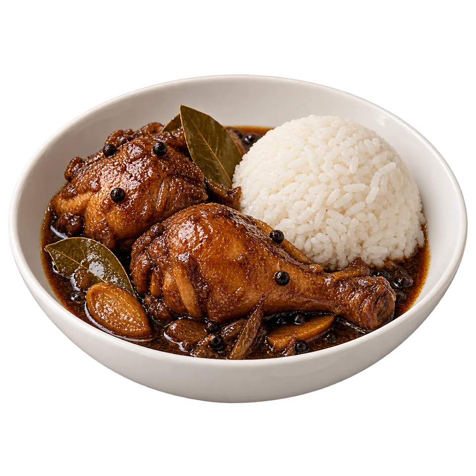

Comfort on a plate
Chicken adobo
£9.99A Filipino classic, served with rice.
Part of our changing weekday specials.
Filipino flavours. Leicester heart.
Good food.
Good people.
Brighter days.

Rich, savoury, made for a bowl of rice.
The café
Kain tayo. Come, let’s eat.
A proper meal. A familiar flavour. A table with room for one more. Find Alródia tucked away in Malcolm Arcade, serving Filipino favourites with a warm welcome.
Discover AlródiaSaturday at Alródia
Pork adobo. Beef kare-kare. Buttered garlic shrimp.
And more Filipino favourites to gather around.
Find Alródia
Come for the food. Stay for the company.